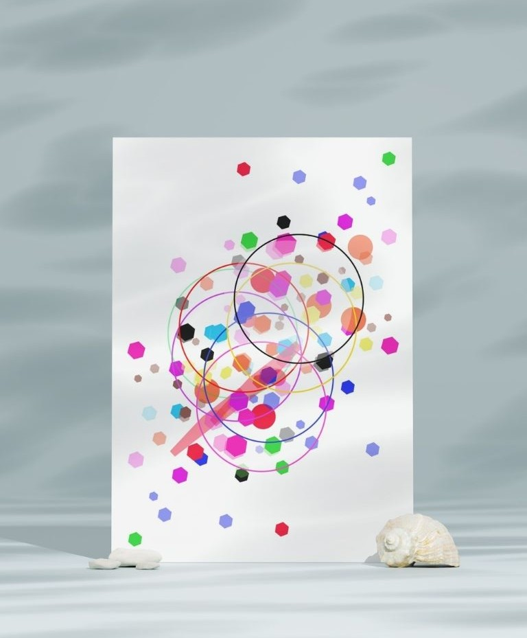
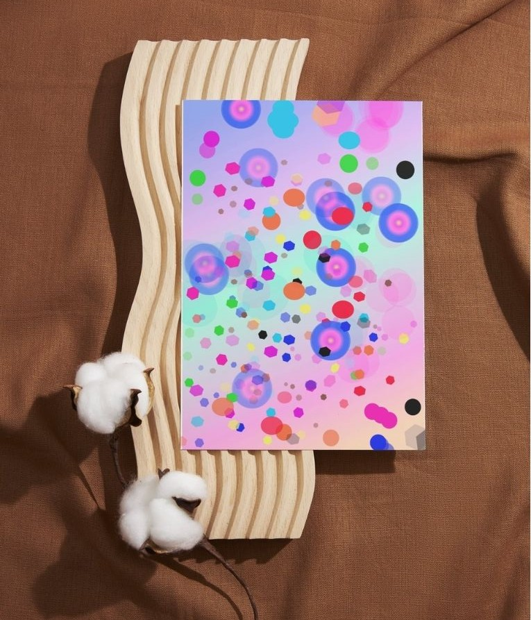
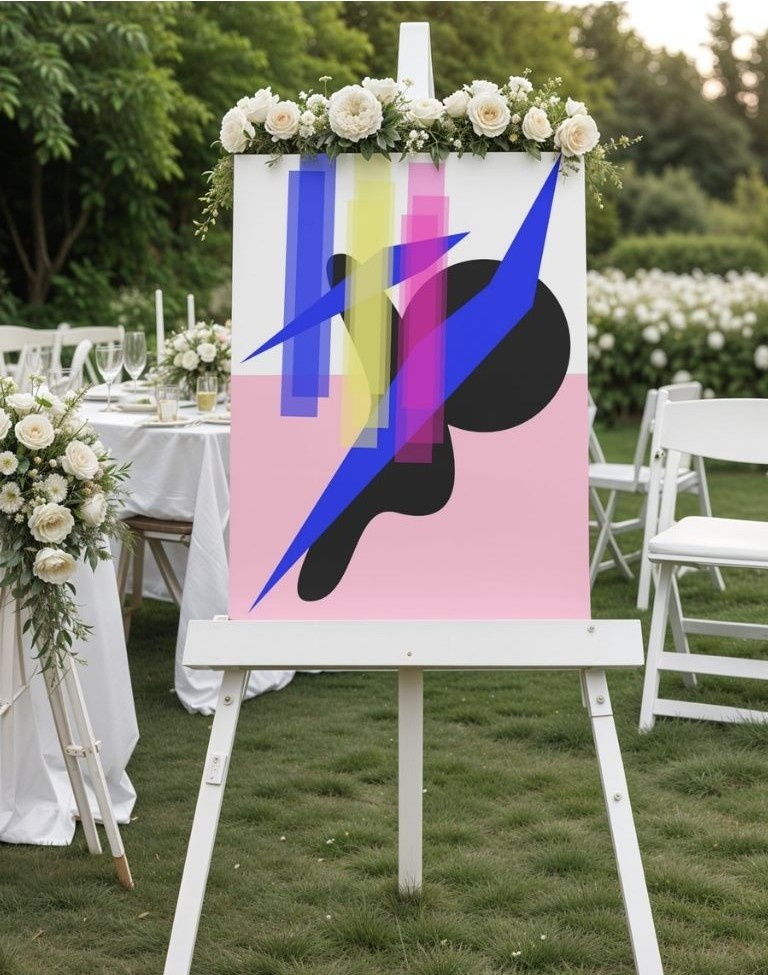
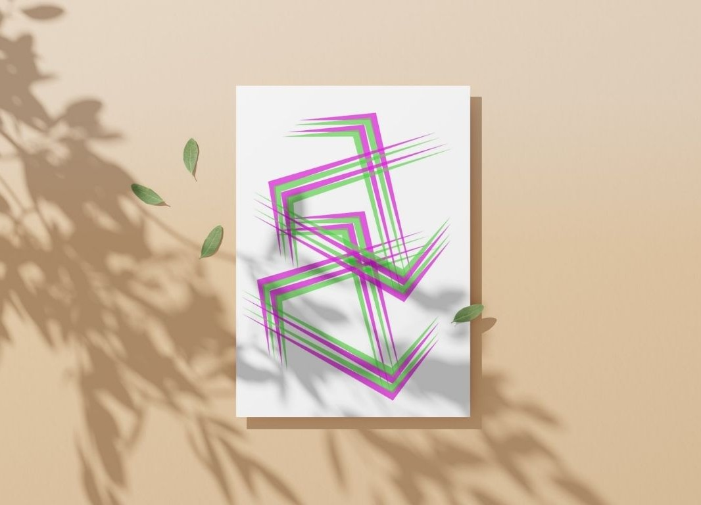
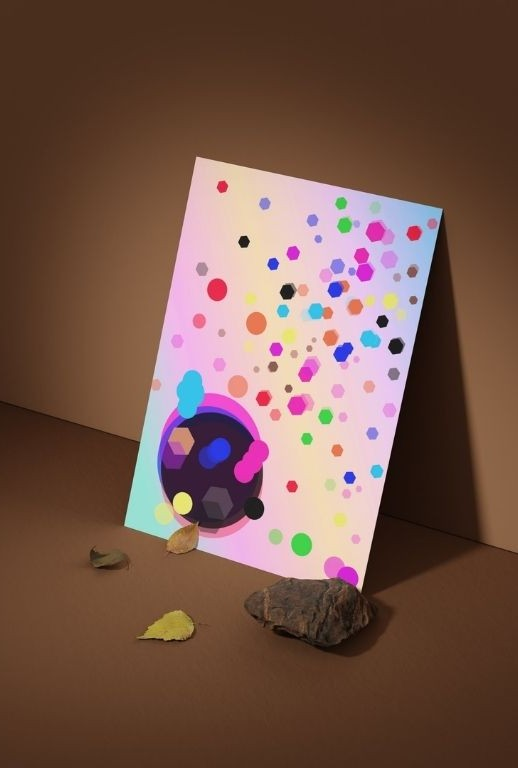

01
Ecos de Luz
Una composición digital construida a partir de luces, colores y formas abstractas que generan una sensación de movimiento constante.
Una selección de obras donde el arte digital, la geometría y el color se encuentran para crear nuevas experiencias visuales.
Una composición digital construida a partir de luces, colores y formas abstractas que generan una sensación de movimiento constante.

Una exploración geométrica inspirada en la fragmentación del espacio y la interacción entre diferentes formas y colores.

Una interpretación de formas orgánicas y estructuras digitales que construyen una composición visual dinámica.

Una composición geométrica donde el color y las formas se combinan para crear equilibrio, ritmo y profundidad.

Una exploración visual que juega con la profundidad, la percepción y la transformación de las formas dentro del espacio digital.

Una interpretación abstracta de un horizonte construido mediante transiciones de color, luz y diferentes dimensiones visuales.